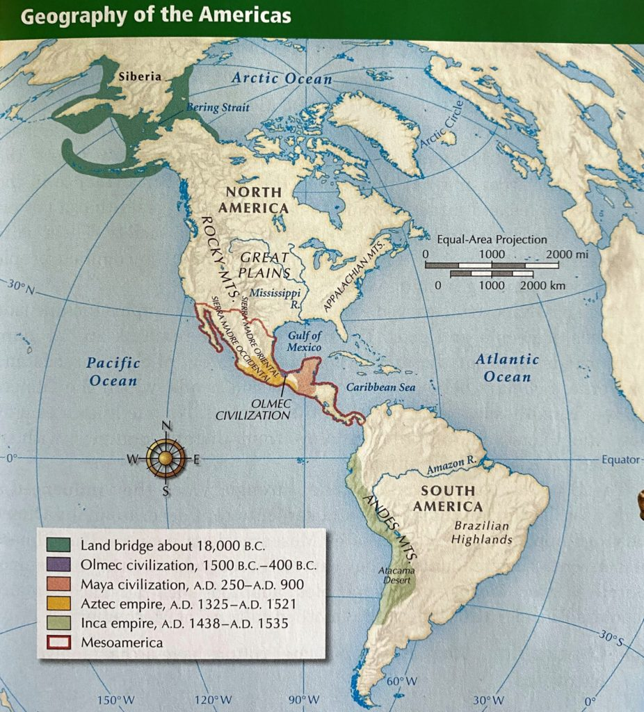
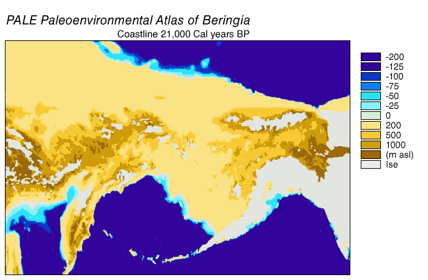
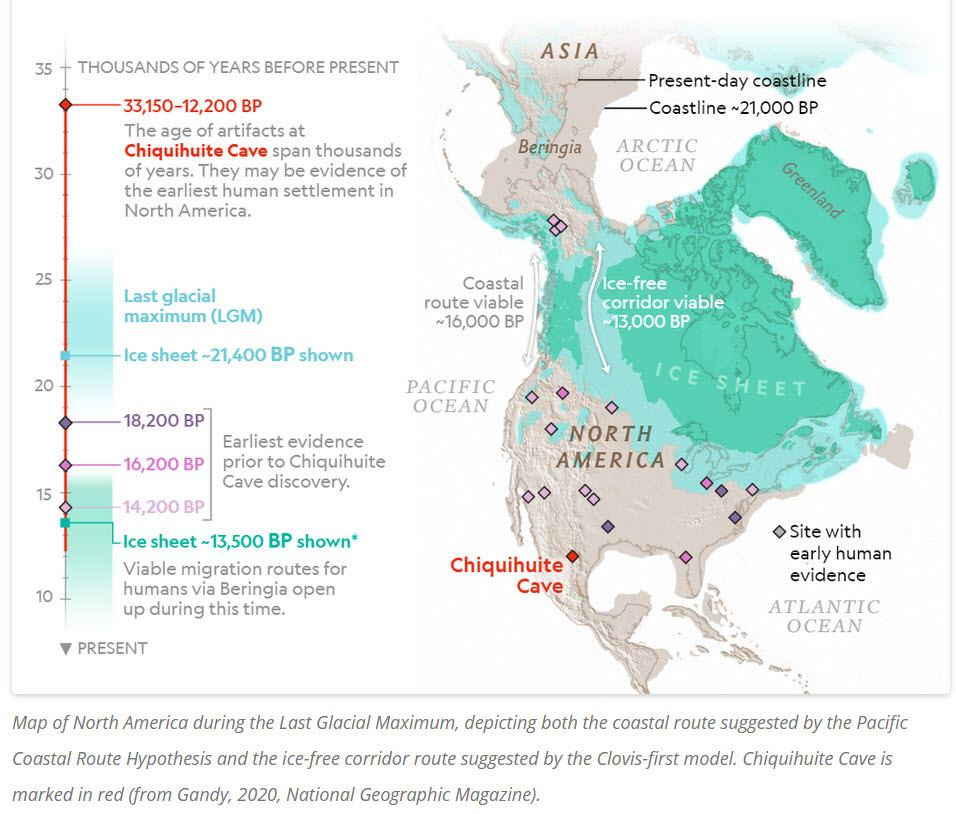
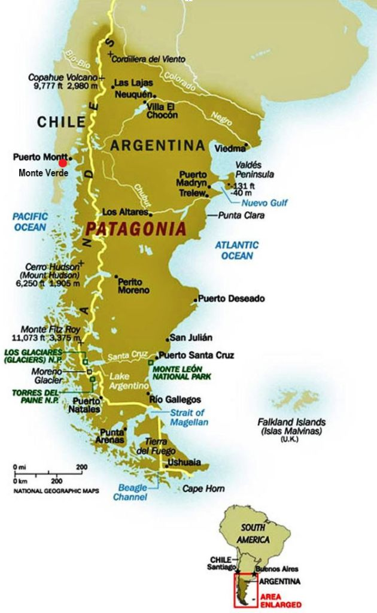
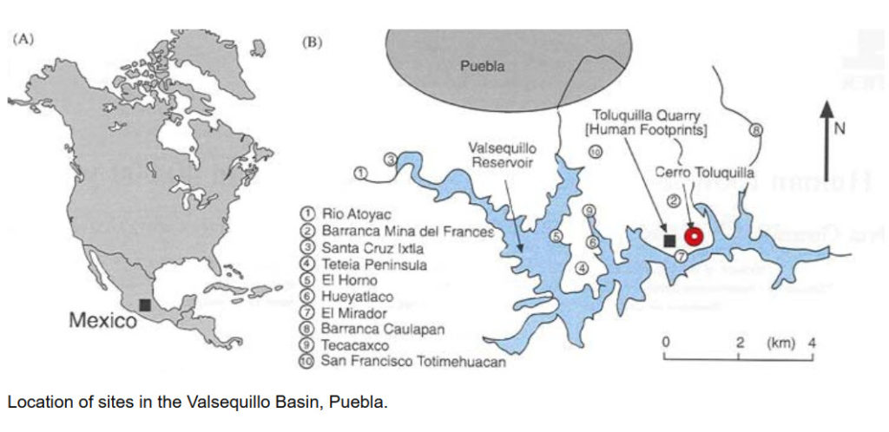
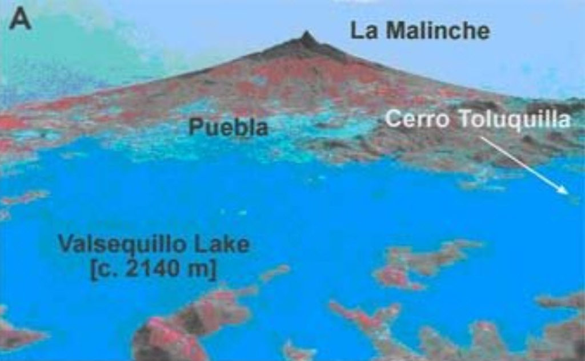
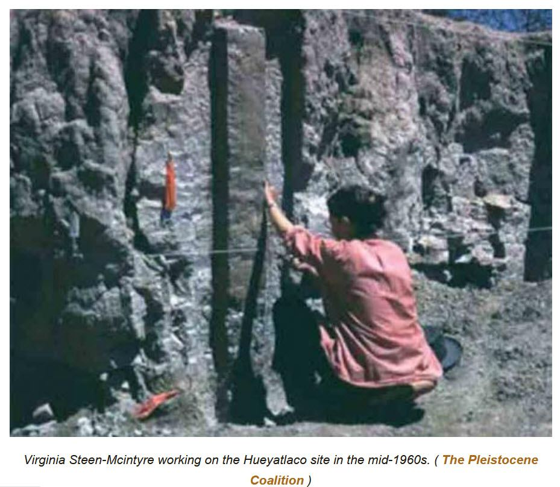
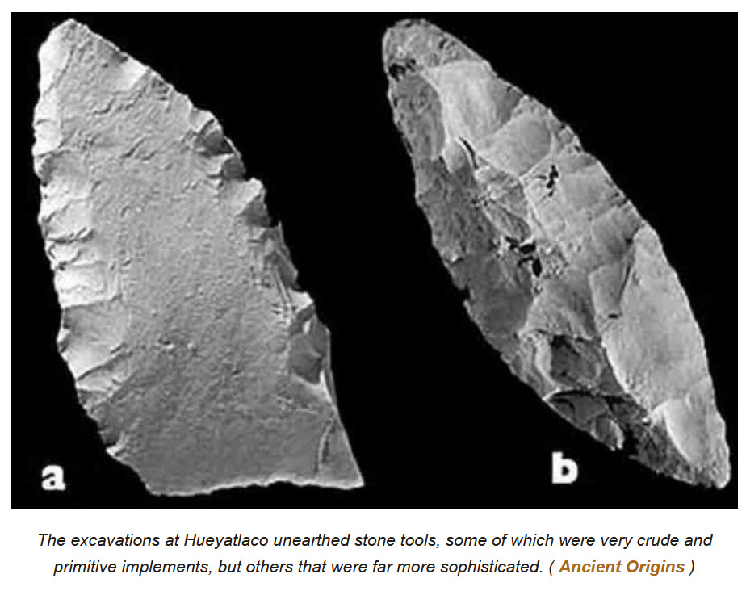

According to mainstream understandings, mankind is only around 6,000 years old. And while there is much evidence to support earlier dates going as far back as 30,000 years few will embrace the implications of these discoveries. Thus, we are faced with an enigma. What to make of remains that are dated at over 250,000 years old?
Could it be that everything that we were taught in school is wrong?
My opinion is YES.
Life and Living
There is a strong and significant percentage of the population that wants things; life and relationships, to be “black and white”. Where everything is simple. Where everything is cleanly put inside it’s own box; nicely labeled, categorized and filed away for future use. It certainly looks nice. It’s orderly. It’s easy to index. It’s great to conceptualize.
But…
Life is not that way.
And many people like to describe this key to organization through the understanding of disorganization as “shades of grey” as opposed to “black and white” thinking. But you know, that life isn’t something that is easily cataloged. It is dynamic, complex and endlessly interesting.
To understand things, you shouldn’t have single dedicated articles to only that particular issue. Like a website for a specific type of nail, or a website for how to groom poodles. For while they are easy to look up and search for, and helpful for writing an essay or report for school, they do not convey or transfer information in the same way as an up-front “hands on”, “face to face” discussion with a close friend would have.
If you are with a close friend, you will know them. You will understand their likes, and dislikes, their passions, their biases, and their exaggerations. And knowing that will best help you to understand the conveyance of information at hand.
Which is why you trust your best friend to help get you out of a mess, while you wouldn’t dare ask a colleague. Which is why you would believe a family member who told you not to buy a used car from THAT man, and why you wouldn’t believe Bill Clinton or Donald Trump when they offered to sell you a used car.
Everything comes with context.
Everything.
Propaganda relies on the lack of full contextual information to control you.
For instance, the “China mishandled the Wuhan virus” narrative relies on the omission that Jon Bolton was the head of the Bio-weapon program for his entire term under the Trump Administration.
There are many such examples of this.
But let’s not digress too deeply. Instead, let’s recognize that everything [1] comes with context, and that [2] it’s very difficult to provide contextual information inside of any article. Which is why we must assume [3] bias or slant in any information that you read or study.
Noteworthy Website
One of my favorite websites is “Ancient Origins“. They offer up mysteries of the past, exciting discoveries and alternative views of history. Anyone with even a passing interest in history would find this site interesting.
Some of the articles are fantastical, while others are bland and boring and relates to obscure subject matter. But that’s all right. As long as your recognize what the website is, what it’s purpose is, and why it exists that is often enough to provide enough contextual information to understand the relative value of the articles that you are reading there.
In a way, websites with greatly diverse content is the modern day incarnations of periodicals and magazines. And while times have changed. Who we are haven’t.
Back in my early teen years, I used to read “Treasure Magazine”. And inside that magazine (and others of a similar genre) were stories of mysterious objects that people found. Some were found by metal detectors, while others were found in unlikely places, like a hidden room, or up in the rafters of a chicken coop. There were also stores of lost treasure, and the stories that had now become obscure local legends.
As a young boy, I “ate it up”. I literally read those magazines cover to cover, and then put them carefully in a stack (of magazines) that kept on a growing in the bathroom next to my bedroom. There, in that stack were issues of Mad Magazine, National Geographic, Weird Stories comic books, Analog Magazine, “The Good Old Days” and “Men’s” Magazines.
For me, they took me to far off lands, strange adventures and interesting places. I could imagine myself fighting of hordes of hungry otters, discovering buried golden treasure, exploring an abandoned castle dungeon, and finding a book filled with secrets in a long lost attic.
In those days I would hastily make myself a sandwich out of leftover pot roast, slices of cheese, and a sliced tomato from the garden (plus some Miracle Whip brand mayonnaise) and put it on a plate. There, I would go to a quiet spot, eat my sandwich and read my magazines. All away from others so that I wouldn’t get “roped” into doing a new chore or other task.
I found this activity relaxing, fun and enjoyable. And more than a few times, my trusty cat Sedwick would scamper up the tree and let himself in to chill out besides me.
Such was my youth.
Now, you have to take everything into account. At that time, while I was busily attending “middle school”, the subjects (while interesting) were not the same. For it was the subjects that I read at home; the science fiction stories, the poetry, and the adventure stories that tickled my imagination. And that, I believe is critical. You cannot live your entire life believing everything that is taught to you. You have to probe, push and understand things in new and different ways.
And maybe they are bullshit, and don’t make sense.
But maybe they are real and are suggestive of other things. Certainly Erich von Däniken greatly influenced me. And while I never (at that time) ever thought that I would some day meet the strange beings that I read about it was nice to have a contextual background that made the introduction of such beings more reasonable and palatable to me.
Now, I know that the past is interesting and colorful. Certainly my exposure to events, changes and things have greatly influenced my thoughts in this matter. And now when I read the fantastical, I judge things through the contextual lens of my background and my experience.
And here is one such story.
I read this story while I had a glass of basic red wine at my side, and a plate of toasted Italian bread with peppers, onions and cheese. And found the following article to be just as tasty as what I was enjoying.
Controversy at Hueyatlaco: When Did Humans First Inhabit the Americas?
Found HERE. Written on 28 April, 2021 - 18:53 Aleksa Vučković All credit to the author, and note that it was edited to fit this venue, and MM comments and thoughts abound.
What happens when an archaeological site is so extraordinary, that it threatens to eclipse everything we knew about history up to that point?
Some discoveries are just too hard to fully grasp, and that makes us question their accuracy.
Hueyatlaco in Mexico is one such archaeological site.
It is forcing us to reconsider the time frame of human habitation in South America.
By a lot.
The finds presented at Hueyatlaco are still a matter of heated debate amongst scholars today, but one thing is certain – there are still many unanswered questions which need to be explored.
The accepted history
Here is the accepted history for how, and when humans arrived to the Americas. Anything that differs from this narrative is rejected out of hand, and certainly enrages statists who have their careers and their reputation entangled with this narrative. The following is from an academic website.
The narrative;
Around 16,000 BP, people migrated from Siberia (Asia) to Alaska (North America) over the Bering Land Bridge (map below).

- New evidence found in Chiquihuite Cave, Mexico, including tools made from a type of limestone not originating from the cave itself, suggests that humans first arrived in North America possibly as far back as 30,000 BP. At that time, the ice sheets covering North America during the last ice age were still extensive, which would have made cross-continental travel very difficult, and suggests that the Pacific coast was the more probable travel route. This idea is known as the Pacific Coastal Route Hypothesis.
- This new research indicates that even though people likely reached North America no later than 26,500 to 19,000 BP, occupation did not become widespread until the very end of the last ice age, around 14,700 to 12,900 BP.
- This new evidence dispels the Clovis-first model, named for evidence of human occupation in Clovis, New Mexico. This model suggests that the first people to reach North America traveled across the Bering Land Bridge and then into North America along an ice-free cross-continental corridor around 16,000 to 10,000 BP. It is likely that by then North America had already been occupied by people who migrated via the Pacific coastal route.
- Under the Pacific Coastal Route Hypothesis, people traveled south along the “kelp highway” of the western coast of the Americas because it was mainly ice-free and therefore easier to traverse than the ice-covered inland areas (map below). The coastal waters had common giant kelp species such as Durvillaea antarctica and Macrocystis pyrifera, which supported rich ecosystems that provided food, such as sea bass, cod, rockfish, sea urchins, abalones, and mussels for the migrating people. At the end of the last ice age, glaciers melted and sea levels rose, flooding the “kelp highway.”

- During the last ice age, which peaked around 21,000 BP and ended around 10,700 BP, global sea levels were up to 100 meters lower than they are today because colder temperatures resulted in large amounts of water becoming frozen in glaciers.
- The Bering Land Bridge existed during this time of low sea levels. When the glaciers melted and sea levels rose to their present-day position, the land bridge flooded and formed the Bering Strait that now separates Asia from North America. See below for an interactive map of the Bering Land Bridge and the Bering Strait over time.

After the initial migrations to North America, people began moving southward, following the Pacific coast from Alaska to Chile.
Those who made it to northern and central South America were limited to small communities because the cold, harsh climate of the ice age prevented populations from expanding.
A short period of rising temperatures and retreating glaciers followed, which allowed people to migrate further south and establish new settlements in Patagonia, such as in Monte Verde (map below).
Then, around 14,500 BP, in what is known as the Antarctic Climate Reversal, temperatures dropped as much as 6℃ below present-day and remained low for 2 millenia.
When temperatures rose yet again, more glaciers melted, flooding the Strait of Magellan and cutting the southernmost settlements on Tierra del Fuego off from the mainland (map below), leading to a cultural division between mainland and coastal inhabitants.

Anything that differs from this narrative is considered to be suspect or fraudulent.
Such is the archaeological dilemma of the 250,000 year old Hueyatlaco site.
The Valsequillo Basin
The site in question is located in Mexico in an area known as The Valsequillo Basin. It is a depressed area that used to be an enormous lake or series of lakes thousands of years ago.
The Valsequillo Basin is located near the city of Puebla, in Mexico.

Situated in the central part of the country, this basin has been the focus of much interest for geologists, archaeologists and the scientific world as a whole.
This interest was sparked due to the presence of numerous megafaunal remains and evidence of very early human habitation.
Megafauna, as we know, is the term commonly used for large animals that roamed the landscapes of the Pleistocene, such as mammoths, woolly rhinoceroses, and cave lions.
What is megafauna? We’ve all heard stories from the age of the dinosaurs, when giant creatures the size of buses or even buildings roamed the land and the oceans, but their disappearance didn’t mean the end of the giants: In fact, megafauna was predominant in every continent on Earth, through multiple glaciations and climate change periods, until about 50,000 years ago during the Late Pleistocene. That is, until humans entered the picture. Our increasing hunting and habitat pressure lead to a great decrease in the numbers and distribution of megafauna, followed by subsequent extinctions. The decline of megafauna started so early in our history, and its progress was so steady, that only now are we starting to acknowledge and study the effects of megafauna in regulating our ecosystems and the impacts of megafaunal loss across the globe. -True Nature Foundation
However, although rich in important discoveries, the site has always been the cause of much controversy, simply because some of the theories surrounding it are very hard to fully grasp.
It has been proposed that the landscapes of the Early Pleistocene period were characterized by many deep lakes, and that this basin might once have been one such lake.

However, no direct proof for this ever surfaced and dating has proven quite difficult for scholars.
Nevertheless, the area is of immense geological interest due to it being dominated by the stratovolcanoes Popocatépetl and La Malinche, and its location in the Trans-Mexican Volcanic Belt.
As such, this is a site with a time-worn history, which also helps shed some light on early human habitation of the region, because geology and archaeology often go hand in hand.
Criticisms Mount Against Claim of Hominins in the Americas Over 100,000 Years Ago
Some of the first excavations at Hueyatlaco were carried out in 1961, when professor Cynthia Irwin-Williams conducted an extensive dig at the site.
Even before she arrived, the region was known as a place rich in animal fossils, which sparked the interest of scholars.
Irwin-Williams was soon joined by other prominent persons of the U.S. Geological Survey, notably Virginia Steen-McIntyre, who was responsible for publicizing the find and the magnificent discoveries it entailed.
Due to the vast numbers of animal fossils, it was commonly believed that this site was a kill site, where ancient humans butchered the animals they hunted.
The countless animal remains were located in fluviatile deposits commonly known as Valsequillo gravels, which were often plain and exposed in the high cliff sides of the Valsequillo Reservoir.
In geography and geology, fluvial processes are associated with rivers and streams and the deposits and landforms created by them. When the stream or rivers are associated with glaciers, ice sheets, or ice caps, the term glaciofluvial or fluvioglacial is used. The White River is so named due to the clay it picks up in the Badlands of South Dakota. -Fluvial processes - Wikipedia
Some of the ancient animal fossils found included bison, camel, dire wolf, peccary, short-faced bear, sloth, horse, tapir, mammoth, saber-toothed cat, mastodon, glyptodon, four-horned antelope, and several other species.
But the really important finds were made in 1962, when Irwin-Williams discovered both animal bones and stone tools, together, in situ.
Indicative of tool-making humanoids that hunted and killed the animals.
The subsequent struggle to positively identify the age of these remains led to much controversy.
The tools that were discovered included some very crude and primitive implements, but also tools that were much more sophisticated, with double edges and detailed flaking construction.
Indicative of multiple societies, or the immensity of age of a singular society.
These tools were diverse and included quite elaborate projectile points, many of which were made from non-local materials.
Indicative of travel, or possibly trade.
This was a clear proof that Hueyatlaco was used by various groups of people for a long period of time.
Either way, these findings were quickly pushing back the previously believed timeline of human habitation in South America, which caused conflicts in the scientific world.
Dating to 250,000 years, when at the time, the earliest human presence was dated to 6,000 years ago.
Unhappy Historians
Very early on in the excavations, attempts were made to discredit the work done at Hueyatlaco, and some turned out to be blatant attacks on the work.
Someone seemingly had a problem with the idea that South America was inhabited so much earlier than was commonly believed.
In 1967, Jose Lorenzo, a member of the Mexican Instituto Nacional de Antropologia e Historia, came forth with a controversial claim that the artifacts discovered were deliberately planted at the site, in a way that made it difficult to know whether they were actually discovered.
This gossip was seemingly unmerited and looked a lot like an attempt to disrupt the crew from making further claims at the site.
What is more, the suspicious activities did not stop here.
Irwin-Williams did make a startling discovery of mammoth bone fragments that were carved with intricate images, depicting various megafauna animals such as serpents and saber-toothed cats.
Similar carved images have been discovered all over the world, and are associated with early man.
However, these carved bones disappeared under puzzling circumstances, as if someone didn’t want them to reach the public eye.
Yet, while the evidence has disappeared, the photographs of the carvings survive.

By 1969, Irwin-Williams sought support in the scientific community, and gained support from three renowned scholars who visited the site of the excavations and confirmed that everything was being conducted in a professional manner.
During that same year, the team published their first scientific paper that detailed the excavations and the importance of the site.
And that importance was the age .
Dating the site
Various methods for dating the finds were utilized, many of which were revolutionary for the time.
The usual radiocarbon dating indicated that the remains were roughly 35,000 years old.
However, dating by uranium suggested the remains to be far older, roughly 260,000 years old.
At the time, these results were considered an anomaly, especially due to the fact that general science proposed a general time of 16,000 years before present for the settling of the Americas.
Radiocarbon dating did not agree with uranium dating; thus creating an anomaly.
Some suggested that the strata (or geological layers) were eroded by ancient waterways, and that might have mixed up the specimens, and causing such differing results.
By 1973, scientists returned to Hueyatlaco, hoping to conduct new excavations and attempt to once more examine the layers and to resolve the oddities of dating the finds.
Their research concluded that the layers were not eroded and that specimens were not mixed up.
What is more, this new team managed to analyze volcanic ash from the site and apply the revolutionary zircon fission track dating method.
Through this geochemistry approach, they determined that the volcanic ash – discovered in the same layer as the tools – was roughly between 370,000 and 240,000 years old.
This confirmed the extremely old age of human habitation at the site, and further deepened the enigma that was Hueyatlaco.
The remote age of the artifacts was confirmed by the geochemistry method.
In time, plenty of friction arose between the team members, as they could not agree on the age, the direction in which the excavation was heading, or the accuracy of the dating methods.
Uranium dating was extremely new at the time, and its reliability not well known, while the fission track dating method had a substantial margin of error.
In time, the excavation team was separated by their views.
Site controversy
Irwin-Williams believed that the probable age was 20,000 years before present, although that view in itself was considered controversial by many.
On the other hand, Harold Malde and Virginia Steen-McIntyre, other team leaders, firmly believed the original dating of 200,000 years before present – which was so revolutionary that it was hard to comprehend.
Some suggested that the 20,000 year theory by Irwin-Williams was “puzzling” and almost a deliberate tactic to discredit the find.
This was believed mainly because no evidence for that age was found in the excavations at all.

Irwin-Williams never went forward to solidify her claims.
In fact, she never published a report on the site whatsoever, which led to questions on the honesty of her claims.
On the other hand, the other part of the team firmly believed in their 200,000 year theory, and were not willing to drop it.
Formal announcement
In 1981, this faction made up of Malde, Fryxell, and Steen-McIntyre published an extensive scientific paper in the Journal of Quaternary Research , providing a detailed insight and evidence for the extremely old dating of human habitation at the site.
In their paper, they provided the results from four different dating tests: [1] the fission track, [2] the uranium-thorium test, [3] the study of mineral weathering to determine age, and [4] the tephra hydration tests.
All of these tests confirmed the age of the remains to be roughly 250,000 years old which confirmed their theories.
To that end, the authors wrote in their paper:
"The evidence outlined here consistently indicates that the Hueyatlaco site is about 250,000 years old. We who have worked on geological aspects of the Valsequillo area are painfully aware that so great an age poses an archaeological dilemma [...] In our view, the results reported here widen the window of time in which serious investigation of the age of Man in the New World would be warranted. We continue to cast a critical eye on all the data, including our own."
This was an educated, accurate response that acknowledged that such a radical claim did seem odd, but was not entirely impossible.
The story of Hueyatlaco continued to look like a deliberate attempt to discredit these finds or hide them under the carpet.
The evidence was there: early humans could have inhabited the so-called New World, the Americas, far earlier than was commonly believed.
Not good enough!
But seemingly, someone did not want that truth to be accepted.
To that end, Irwin-Williams, who was at odds with the rest of the team, raised objections to several aspects of the published paper, seemingly continuing her attacks on the finds.
The team were confident and quickly refuted her attempts to discredit their work.
Further secrets were soon revealed.
Virginia Steen-McIntyre was at one point fired from her job due to her claims, and she also revealed that some of the original team members were harassed, their careers were threatened, and they were proclaimed incompetent – all because of their involvement in the project.
So, we need to wonder, why did these findings cause so much enmity from mainstream science?
Sure, to some, the claims of such an old age might seem radical and hard to believe.
But rather than simply disagreeing with the claims, mainstream scholars went to great lengths to attack, harass, and fully discredit the professional work the team has conducted.
Nevertheless, as time progressed, new tests were conducted, providing new evidence and deepening the controversy related to the site.
Testing, testing and then even more testing!
In 2004, for example, researcher Sam Van Landingham conducted extensive bio- stratigraphic analysis, confirming that the strata that bore the discovered tools was some 250,000 years old.
He re- confirmed these finds once again in 2006.
He states in his papers that the samples can be dated to the so-called Sangamonian stage (from 80,000 to 220,000 years before present) due to the presence of several diatom species only appearing in that age.
Diatoms are single-celled algae Diatoms are algae that live in houses made of glass. They are the only organism on the planet with cell walls composed of transparent, opaline silica. Diatom cell walls are ornamented by intricate and striking patterns of silica.
More findings appeared in 2008, when paleomagnetic testing was conducted on the volcanic ash layers from the site, dating them to roughly 780,000 years before present.
The geological time scale is used by geologists and paleontologists to measure the history of the Earth and life. It is based on the fossils found in rocks of different ages and on radiometric dating of the rocks. Sedimentary rocks (made from mud, sand, gravel or fossil shells) and volcanic lava flows are laid down in layers or beds. They build up over time so that that the layers at the bottom of the pile are older than the ones at the top. Geologists call this simple observation the Principle of Superposition, and it is most important way of working out the order of rocks in time. Ordering of rocks (and the fossils that they contain) in time from oldest to youngest is called relative age dating. Once the rocks are placed in order from oldest to youngest, we also know the relative ages of the fossils that we collect from them. Relative age dating tells us which fossils are older and which fossils are younger. It does not tell us the age of the fossils. To get an age in years, we use radiometric dating of the rocks. Not every rock can be dated this way, but volcanic ash deposits are among those that can be dated. The position of the fossils above or below a dated ash layer allows us to work out their ages. -How paleontologists tell time
Hueyatlaco remains a true scientific anomaly.
It is not at all impossible that early man could have crossed over to the Americas much, much earlier than is currently believed.
In fact, there already is the conundrum of the Solutrean theory , which tells us that the Clovis people , the proposed ancestors of the Native Americans, were not the first inhabitants of the Americas.
Besides these, there are numerous pieces of evidence across the continent that tell us that it is nigh time that we reconsider the history of human habitation in the Americas.
Some Conclusions
Assuming that the array of scientific evidence is correct, then the Hueyatlaco site is truly ancient and indicates tool-using, and tool-manufacturing humanoids 250,000 years ago. This not only turns conventional evolutionary theories “upside down”, but is pretty much discards the vast number of theories in support of human “land bridge” migration.
In short, for the humans to be in the Americas at this date, one of two things must have happened.
Either;
[A] Early man constructed ocean capable vessels and sailed across the wide oceans.
Or,
[B] Early man evolved independently in the Americas as well as in Africa.
We need to come to grips and accept the idea that there was probably various evolutionary clusters and separate lineages that did not originate from a common “Lucy” humanoid. Many died out, and many adapted and evolved, and many propagated throughout the world.
While not popular at this time, you can rest assured that this understanding will be embraced hundreds of years in the future.
But wait!
This is NOT a lone, isolated find.
Other Ancient Discoveries
There are many reported human skeletal finds which are in discordance with current evolutionary beliefs dating back to anomalously ancient geological periods in the distant past, way before it is accepted that human beings ever existed.
One intriguing report surfaced in an American journal called The Geologist dated December 1862:
“In Macoupin County, Illinois, the bones of a man were recently found on a coal-bed capped with two feet of slate rock, ninety feet below the surface of the earth. . . The bones, when found, were covered with a crust or coating of hard glossy matter, as black as coal itself, but when scraped away left the bones white and natural.”
The coal in which the remains were found have been dated at between 320 and 286 million years old, which, despite a lack of supporting evidence and little information on the discovery, is certainly worthy of inclusion here.
The Foxhall Jaw
A better documented account of an anomalous find is of a human jaw discovered at Foxhall, England, in 1855 which was dug out of a quarry at a level of sixteen feet (4.88 meters) under ground level, dating the specimen to at least 2.5 million years old.
American physician Robert H. Collyer described the Foxhall jaw as ‘the oldest relic of human existence’.
The problem with this particular fossil was its modern appearance.
A more apelike mandible would have been more acceptable despite its great antiquity, but many dissenters disbelieved the authenticity of the bone ‘probably because the shape of the jaw was not primitive’, according to paleontologist Henry Fairfield Osborn.
Buenos Aires Skull
A fully modern human skull was found in Buenos Aires, Argentina, in an Early Pliocene formation, revealing the presence of modern humans in South America between 1 and 1.5 million years ago.
But once more, the modern appearance of the skull doesn’t fit with conventional thinking on human origins so was discounted on these grounds alone.
Here we see a clear example of dating by morphology, and a distinct disregard of all other data, no matter how credible.
The thinking is simple; if it looks modern – it must be modern. No modern humans could possibly have existed that far back in time so it must be ruled out.
This approach employs illogical thinking if one considers that the skull was found in a Pre-Ensenadean stratum, which, according to present geological calculations, dates back up to 1.5 million years.
The scientific data, as with a plethora of cases worldwide, does not match the final analogy, and instead of pursuing the matter further until a satisfactory scientific conclusion is arrived upon, the discovery has slipped unsurprisingly into anonymity.
The Clichy Skeleton
In a quarry on the Avenue de Clichy, Paris, parts of a human skull were discovered along with a femur, tibia, and some foot bones by Eugene Bertrand in 1868.
The layer in which the Clichy skeleton was dug out from would make the fossils approximately 330,000 years old.
It wasn’t until Neanderthals became accepted as the Pleistocene ancestors of modern humans that French anthropologists were forced to drop the Clichy skeleton from the human evolutionary line, as a modern type of human could not predate their allegedly older Neanderthal relatives.
Neanderthals are conventionally understood to have existed from 30,000 to 150,000 years ago, and the Clichy skeleton which dated at over 300,000 years ago was simply not an acceptable find despite the evidence to support its authenticity.
The Ipswich Skeleton
In 1911, another anatomically modern human skeleton was discovered beneath a layer of glacial boulder clay near the town of Ipswich, in England, by J. Reid Moir.
Found at a depth of about 4.5 feet (1.37 meters) between a layer of clay and glacial sands, the skeleton could be as much as 400,000 years old.
Naturally, the modern appearance of the skeleton was the cause of strong opposition, but if the find had of been Neanderthal-like, there would have been no questions raised over its position in the glacial sediments.
As Scottish anatomist and anthropologist, Sir Arthur Keith explained,
“Under the presumption that the modern type of man is also modern in origin, a degree of high antiquity is denied to such specimens.”
The deposits in which the Ipswich skeleton was excavated from were recorded by the British Geological Survey as an intact layer of glacial boulder clay which had been laid down between the onset of the Anglian glaciation and the Hoxnian glaciations, a period that stretched between 330,000 and 400,000 years ago.
Some authorities have even put the beginning of the Mindel glaciation (which is equivalent to that of the Anglian) at around 600,000 years ago, which could potentially allow the Ipswich skeleton to also date back that far.
The deposits in which the Ipswich skeleton was excavated from were recorded by the British Geological Survey as an intact layer of glacial boulder clay which had been laid down between the onset of the Anglian glaciation and the Hoxnian glaciations, a period that stretched between 330,000 and 400,000 years ago.
Some authorities have even put the beginning of the Mindel glaciation (which is equivalent to that of the Anglian) at around 600,000 years ago, which could potentially allow the Ipswich skeleton to also date back that far.
The Castenedolo Bones
Situated in the southern slopes of the Alps, at Castenedolo, six miles (9.66 km) southeast of Brescia, lays a low hill called the Colle de Vento, where millions of years ago during the Pliocene period , layers of mollusks and coral were deposited by a warm sea washing in.
In 1860, Professor Giuseppe Ragazzoni traveled to Castenedolo to gather fossil shells in the Pliocene strata exposed in a pit at the base of the Colle de Vento. Reporting on his finds there Ragazzoni wrote:
“Searching along the bank of coral for shells, there came into my hand the top portion of a cranium, completely filled with pieces of coral cemented with blue-green clay characteristics of that formation. Astonished, I continued the search, and in addition to the top portion of the cranium I found other bones of the thorax and limbs, which quite apparently belonged to an individual of the human species.”
Once more, negative reactions ensued by both geologists and scientists who were unwilling to accept the Pliocene age offered by Ragazzoni for the skeletal remains.
It was explained away by an insistence that the bones, due to their clearly modern characteristics, must have come from a recent burial and somehow or other found themselves among the Pliocene strata.
If in doubt, simply explain it away with logical thinking, even if you ignore the facts within plain sight and filter out the parts which do not fit.
Ragazzoni was understandably not pleased with the reception he received and the disregard given to his legitimate discovery of an anomalously ancient human skeleton, so he kept his eye on the site where he had found the relics once the land was sold to Carlo Germani in 1875, (on the advice of Ragazzoni, who had advised that the phosphate-rich clay could be sold to farmers as fertilizer).
Many more discoveries followed from 1879, as Germani kept his word and informed the professor immediately upon finding more bones in the pit.
Jaw fragments, teeth, backbone, ribs, arms, legs and feet were all dug out of the Pliocene formation which modern geologists have placed at around 3-4 million years old.
All of them were completely covered with and penetrated by the clay and small fragments of coral and shells, which removed any suspicion that the bones were those of persons buried in graves, and on the contrary confirmed the fact of their transport by the waves of the sea’, said Ragazzoni.
And on February 16, 1880, Germani informed Ragazzoni that a complete skeleton had been discovered, enveloped in a mass of blue-green clay, remains which turned out to be that of an anatomically modern human female.
“The complete skeleton was found in the middle of the layer of blue clay. . . The stratum of the blue clay, which is over 1 metre thick, has preserved its uniform stratification, and does not show any sign of disturbance” wrote Ragazzoni, adding, “The skeleton was very likely deposited in a kind of marine mud and not buried at a later time.”
After personally examining the Castenedolo skeletons at the Technical Institute of Brescia in 1883, Professor Giuseppe Sergi, an anatomist from the University of Rome, was convinced that they represented the remains of humans who had lived during the Pliocene period of the Tertiary.
Writing of his disdain towards the naysayers within the scientific community Sergi commented,
“The tendency to reject, by reason of theoretical preconceptions, any discoveries that can demonstrate a human presence in the Tertiary is, I believe, a kind of scientific prejudice. Natural science should be stripped of this prejudice.”
Anomalous Skeletons Have Their Place Too!
Unfortunately, this prejudice which continues to this day, shows no signs of abating, as Professor Sergi recognized back in the 19th century, ‘By means of a despotic scientific prejudice, call it what you will, every discovery of human remains in the Pliocene has been discredited.’
So why does its modern appearance override the other factors?
It doesn’t seem to be a very scientific approach to disregard an archaeological find simply because it does not conform to contemporary evolutionary theses.
The examples cited in this article are only a small selection which has been rescued from obscurity by vigilant researchers, but how many more cases have suffered similar dismissal due to their anomalistic circumstances ?
If science continues to sweep unusual discoveries under the carpet, how are we supposed to progress as a species if we are intent on denying data which contradicts our rigid paradigms?
It would appear that the knowledge filter has been in place for some time, much to the detriment of humankind and our quest to illuminate our foggy, mysterious ancient past.
Of course we cannot be sure of the validity of the anomalous finds mentioned above, but by ignoring the sheer volume of cases which question current scientific paradigms regarding the evolution of man, we are being denied the whole story – which can only be detrimental to the ongoing study of human evolution .
References
Meltzer, D. 2009. First Peoples in a New World: Colonizing Ice Age America . University of California Press.
Steen-McIntyre, V. and Fryxell, R. and Malde, H. 1981. Geologic Evidence for Age of Deposits at Hueyatlaco Archaeological Site . U.S. Geological Survey.
Various, 2016. “Early–Mid Pleistocene environments in the Valsequillo Basin, Central Mexico: a reassessment” in Journal of Quaternary Science .
Zillmer, H. 2010. The Human History Mistake: The Neanderthals and Other Inventions of the Evolution and Earth Sciences . Trafford Publishing.